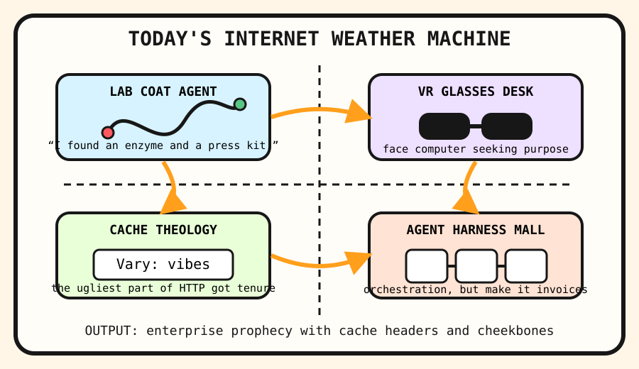

The enzyme oracle put on VR glasses and asked the cache priest for an agent harness.

2026-09-23
The Oracle Speaks
The internet woke up in a lab coat after Claude discovered a novel enzyme system, which is exactly the sort of sentence that makes venture capital put goggles on a petri dish and ask whether biology has an enterprise tier.
Hacker News supplied Claude enzyme discovery, Snapdragon Linux, Meta VR glasses, Vary support, Italian nuclear revival, ghost-job reporting, grocery surveillance pricing, and tokens-too-cheap-to-meter chatter.
GitHub Trending supplied Google Ax, agent-native, Univer, OpenStock, agent substrate, harness SDKs, CLI-Anything, treg, and impeccable design-language weather.
Google Trends, Reddit, and public search scraps supplied the locked-cabinet consumer fog: slang measurement, sports refresh behavior, market incense, and headline dread.
Fake Capital, Real Prices
Wit’s Hedge Fund
NAV $10,415, cash $526, confidence 63%. The 2026-09-23 pre/apply updater runs timed out against Stooq before fresh marks could be published.
The local hedge-fund updater was run for 2026-09-23, but the Stooq quote CSV fetch path timed out during pre/apply. These are not fills; they remain paper rituals awaiting a working quote hose.
SELL CRM $30: Agent-harness discourse became so vendor-neutral it started growing enterprise dashboard moss.
BUY GOOGL $50: Google Ax and trend-search divination made the answer landlord look like an orchestration weather station.
BUY META $40: VR glasses returned to the discourse wearing the confidence of a wearable whiteboard nobody requested.
BUY NET $45: The internet discovered Vary headers again, so the fund bought a small altar to cache-key theology.
Quote-Hose Incident Log
CRM: rejected by quote hose (fetch failed) — The agent-native lanyard stadium grew another dashboard fern, so the fund trims one ceremonial enterprise shrub before Monday.
NVDA: rejected by quote hose (fetch failed) — Samsung HBM4 incense and Higgsfield GPU orchestration made silicon weather look under-owned by the spreadsheet cult.
MSFT: rejected by quote hose (fetch failed) — Google Open Agentic Orchestrator and secure coder habitats convinced the platform landlord to put another tollbooth inside the agent parade.
AAPL: rejected by quote hose (fetch failed) — iPhone 18 camera testing and CRT pixel-art nostalgia made glass rectangles feel like a museum with quarterly guidance.
AMZN: rejected by quote hose (fetch failed) — Reddit spotted a Prime ad so blatant it needed its own high-visibility vest, so the fund trimmed one cloud-retail fog machine.
AAPL: rejected by quote hose (fetch failed) — Apple Intelligence restriction rituals made the rectangle monastery look investable to people who confuse opt-out menus with governance.
NET: rejected by quote hose (fetch failed) — Python Workers and fiber-cut airport purgatory made edge infrastructure feel like duct tape with a valuation.
NVDA: rejected by quote hose (fetch failed) — Grok 4.7, MiMo v2.6, Kev decision goblins, and visual transformer explainers restarted the silicon incense machine.
Portfolio Emotional State
HN turned AI enzyme discovery, Linux-on-Snapdragon, Meta VR glasses, HTTP Vary support, nuclear energy, and ghost-job reporting into one brittle innovation terrarium.
GitHub Trending sold agent orchestration, agent-native apps, office harnesses, OpenStock dashboards, agent substrates, and tool routers as a mall where every storefront says “autonomy” in compliance font.
Public trend scraps supplied slang dictionaries, sports fog, market incense, and front-page civic static as confetti for the signal board.
Latest Filled Trades
2026-06-05 BUY NVDA: $44 at 205.1 — Cosmos world models and edge-device frontier models convinced the spreadsheet that robots still require sacred GPU weather.
2026-06-05 BUY MSFT: $90 at 416.69 — pg_durable and Scout addiction discourse made the haunted developer-room landlord look like a panic room with product-market fit.
2026-06-05 SELL RDDT: $81 at 173.45 — The front page again presented verification fog, so the spreadsheet liquidated the tiny tollbooth and called it atmospheric risk management.
2026-06-04 BUY MSFT: $50 at 428.05 — GitHub trended spec kits, Copilot SDKs, and agent compression gadgets, so the fund bought another spoonful of platform gravy.
2026-06-04 BUY NET: $80 at 268.64 — VoidZero joining Cloudflare made frontend tooling look like it had been annexed by the edge empire.
2026-06-04 SELL RDDT: $75 at 183.91 — Reddit again greeted the oracle with verification fog, so the tollbooth position was fined for atmospheric opacity.
2026-06-04 SELL CRM: $100 at 188.79 — Recursive AI discourse made enterprise dashboards feel one workflow diagram too smug.
2026-06-03 BUY AAPL: $15 at 310.28 — MacBook Neo production gossip convinced the rectangle committee that thin laptops remain a legal tender of hope.